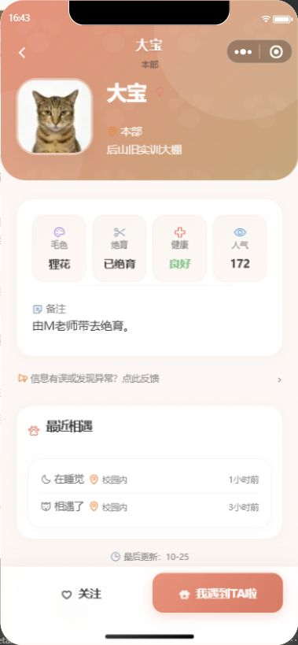

2025 — 至今 · 微信小程序 + CloudBase
校园猫猫
CAMPUS CATS
给校园里的流浪猫做档案、打卡和救助信息，也把“谁绝育了、谁生病了、谁最近在哪栋楼”这些散在群里的信息，放到一个随时能查的地方。
微信小程序原生开发，数据库、存储、云函数都在 CloudBase 上，客户端不碰密钥。项目从一张猫名片开始，后来长出偶遇打卡、救助进展和猫猫小铺。现在它有 75 个云函数和 4,145 条自动化用例——这是它不再像一个作业的原因。
- 75
- 云函数 / Functions
- 4,145
- 自动化用例 / Tests
- 3.11
- 当前版本 / Version
